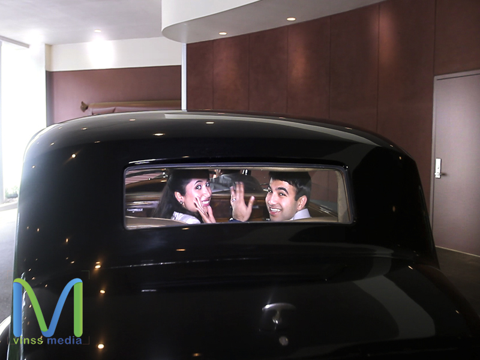
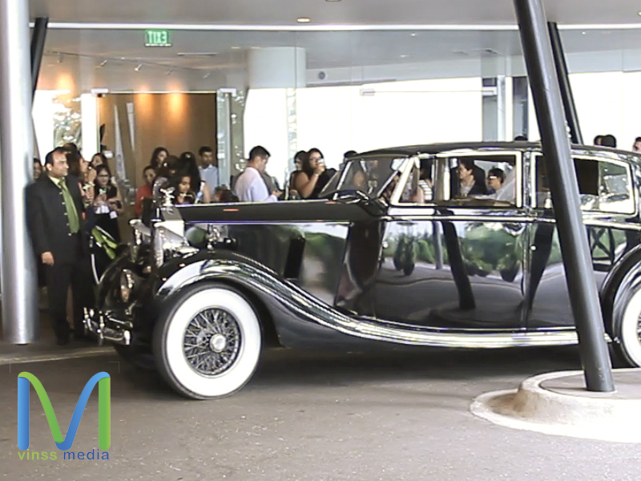
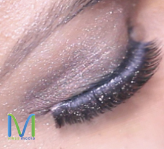

Photographer
PHOTOGRAPHY IN ITS ESSENCE
A picture is worth a thousand words.
The general definition of photography is ‘the art or practice of taking and processing
photographs’. We’ve all heard the saying, “A picture is worth a thousand words”, but we know that’s not
all a photo is worth. There is a lot more than just aiming and clicking to taking an amazing photo.
Photographers use their cameras as tools of exploration and instruments of change. Their images
can evoke powerful emotions for their viewers; from shock to happiness to heartbreak and intrigue.
Capturing vibrant colors, odd angles and once in a life time moments. There is a personal involvement
and expression in their photos. They experiment and adjust continuously to find that perfect angle to
capture that perfect image to share their journey.
The essence of photography is for the photographer to share the world through their eyes; a way
for their viewers to see what they feel and evoke a similar or same emotion. To capture people or places
we will not see again. Think about a time that you saw a photograph, maybe one that was taken of a
beloved relative during an event like a casual family gathering. Think about all the emotions you felt
while looking at that one simple photo. Certainly there were many and you felt what the photographer
was feeling.
When we observe photographs we tend to become nostalgic or yearn for the photo subject.
Imagine looking at a photo of an open field with a calm lake and snow-capped mountain in the distance
or one of small waves lapping at the shores of a remote Caribbean beach. A sense of serenity is evoked by
the photographer for their viewer. As the observer we search for the story the photographer is conveying
to us through their art.
A good photographer tells the story through their work without any explanation at all or allows
you to create your own through their visions and documentation of light. It’s all about the story and
emotion of the people in front of the camera. It’s the photographer’s way of immortalizing their
experience. Photographers know their tools are unforgiving and give exactly what’s there, whether it’s
good or bad.
With a photograph one can be brought together from across the globe. Through captured images
one can walk across hot, sandy deserts, push their way through the thickets of a rainforest, or scale the
walls of mountains. All in all, photography is the telling of the photographer’s journeys.
-
ScrollCopyright © 2015 vinssmedia.com. All rights reserved. Terms of Use | Privacy Policy